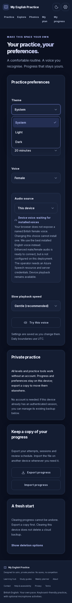

Featured Projects
Production web platforms, native Android applications, e-commerce stores, and client systems with live links and full repositories.
My English Practice — English spelling and pronunciation platform
A complete learning platform built for adult beginners whose spelling and reading are weak, starting with listening and small steps instead of fluent-reading assumptions.
Dark Mode Mobile Interface Previews
Midnight Dark Theme — Home & Curriculum Overview + Practice Preferences & Voice/Data Settings

A little more confidence.
Listen to a word. Spell it one letter at a time. Build your English with calm, everyday practice — no rush, no test, always at your speed.

A comfortable routine. A voice you recognise. Progress that stays yours.
All levels and practice tools work without an account. Export your attempts, sessions and review schedule, or import on another device.
DailyMB — Android quiz helper app with a cloud backend
An independent Android app that collects the day's five "Test Your Skills" quiz answers from public websites, cross-verifies them, and presents them in a clean dark interface.
- Backend: three scheduled fetches a day (00:05, 05:30 and 12:05 PKT); an answer is marked "verified" only when at least two independent sources agree on the same question text; uncertain answers are honestly labelled single-source.
- App features: Home in short and full layouts, a streak system with data rewards at 5-day milestones (25 / 50 / 80 / 100 / 125 MB), 30-day history, settings, onboarding, a Check button with automatic re-check when the app returns to the foreground, and customisable notification times with a native time picker.
- Engineering: the app ships with no database client and no login; it reads through a public read-only key and registers devices through a rate-limited Edge Function. Builds run in GitHub Actions and publish the APK to a GitHub Release. Test suite: Jest, fully passing, with strict TypeScript and lint clean.
Blue Peak — women's stitched clothing store (own brand)
A complete online store for a women's ready-to-wear brand, modelled on large Pakistani fashion retailers.
- Catalogue: 12 products across Women's Stitched, Co-ord Sets, 3PC and 2PC collections; sizes XS-XXL; PKR pricing from 2,845 to 10,495 with was-prices and per-size stock; Cash on Delivery across Pakistan with WhatsApp checkout (03485581969).
- Admin portal: a hidden /admin page protected by Supabase Auth and an admin allowlist enforced by RLS. The owner edits products, uploads photos directly (three photo slots per product, automatic resizing, stored in Supabase Storage), views orders and moves them through new, confirmed, dispatched, delivered and cancelled.
- Design: professional black theme with pink and gold accents, product galleries and detail views, search and size filters, shopping bag.
NextGen Laptops, Abbottabad — client business website
A full website for a laptop shop in Jadoon Plaza Phase 2, Mansehra Road, Mandian, Abbottabad, built from the shop's public information and rebuilt to an Apple-style soft, light, minimal design.
- Content: HP EliteBook 830 G7, Dell Latitude 5420 / 5490 / 7400 2-in-1 / 5520 and Microsoft Surface Laptop, using official manufacturer photos prepared as transparent cutouts with soft shadows that also work in dark mode.
- Admin: a clean hidden /admin panel (no public link) where the shop edits its name, WhatsApp and call numbers, location, socials, deals with images, services, testimonials, FAQs and homepage settings; edits verified live.
- Hosting: moved to a fully free Vercel + Turso (libSQL) setup so admin edits persist without any hosting fee.
- Shop socials: Instagram @nextgen_laptops_abbottabad · TikTok @nextgen_5.6 · WhatsApp 0321-5744034
ReviewNudge — review reminder product
Stack: Next.js, TypeScript, Supabase. A documented product build with README, roadmap, product requirements, architecture, design and phase plans maintained in the repository.
Terrastep — Android fitness territory game (university project)
Built from a 33-page product blueprint: an Android fitness game where walking captures territory. All four planned stages were completed, pushed to GitHub, and a debug APK was produced through cloud CI.
7. More Repositories & Cloud Experiments
Interactive rapid mental mathematics calculation and aptitude training tool.
Fitness business website work, backed by the town-fitness-point Supabase project.
JavaScript web project maintained on GitHub.
An AI tool experiment backed by its own cloud database.